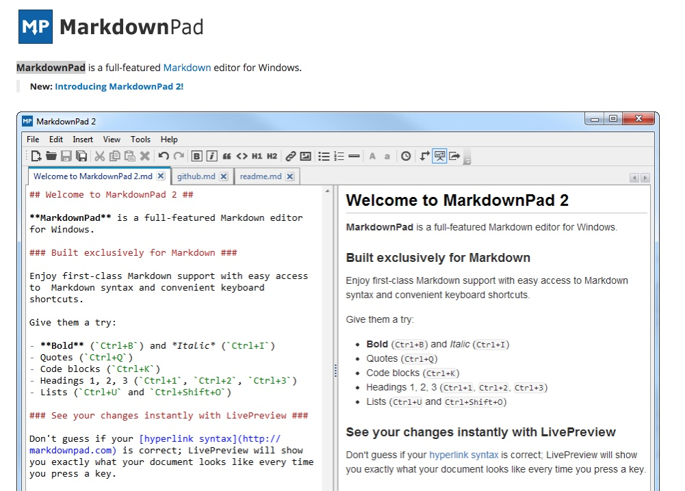
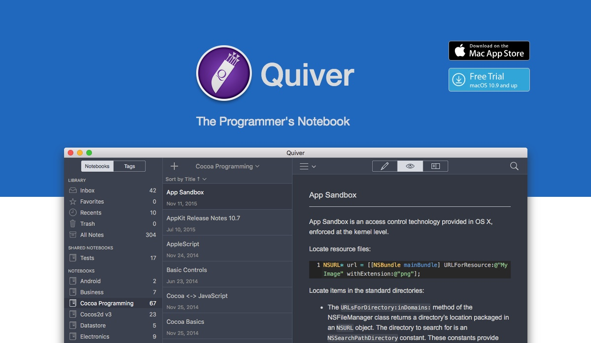
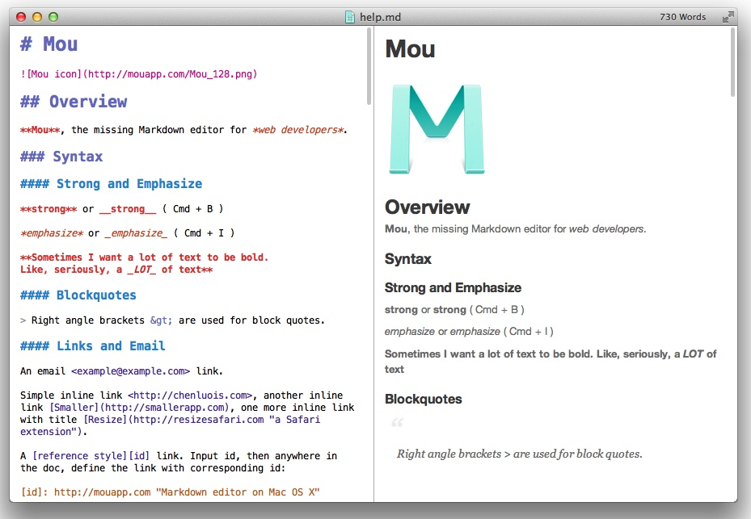
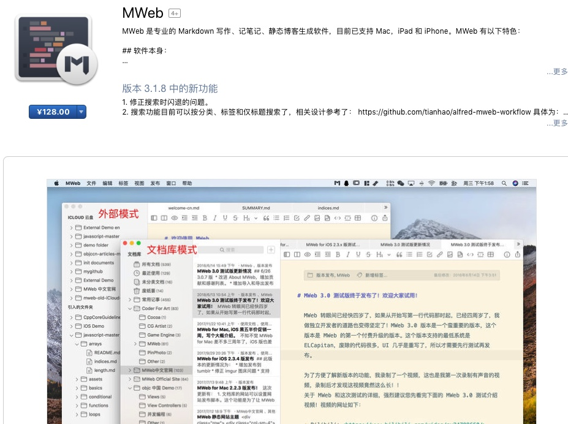
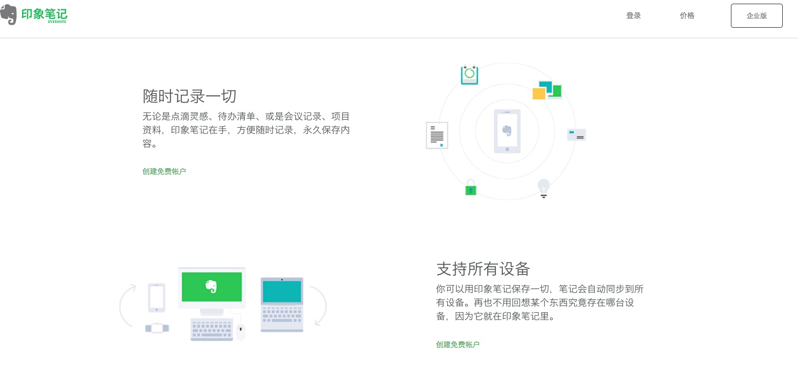
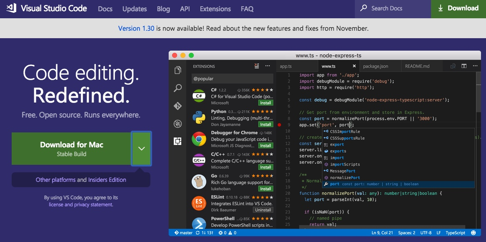
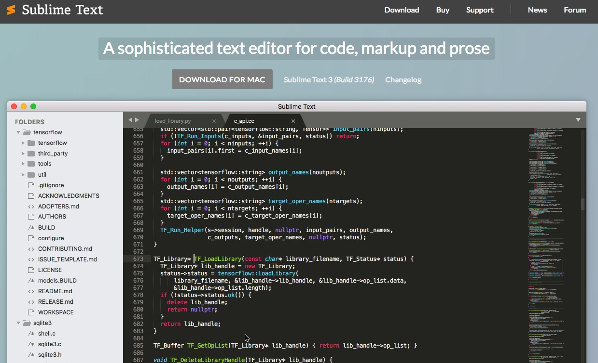
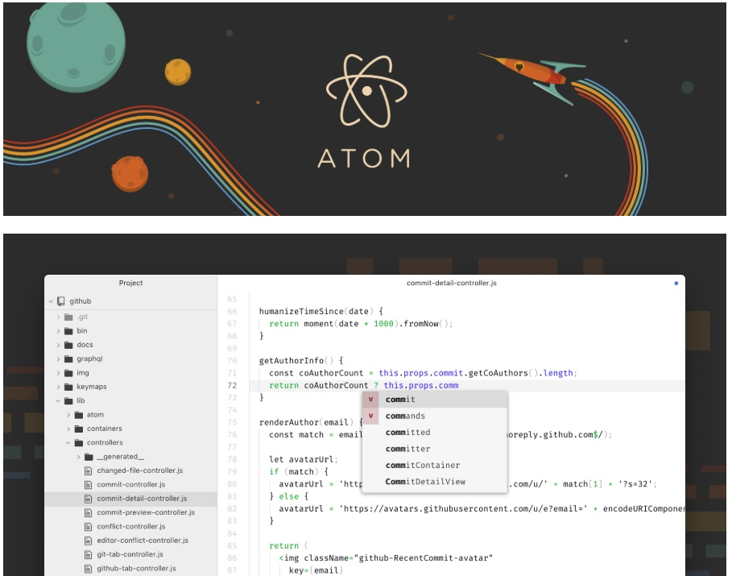

# 常用 MarkDown 编辑器推荐
md-Blog 博客系统是不支持 MarkDown 编辑的，术业有专攻，我们推荐以下几款 MarkDown 编辑器供客户选择。
MarkdownPad
- 官网：http://www.markdownpad.com/
- 平台：Windows

Quiver
- 官网：http://happenapps.com/
- 平台：Mac、iOS

此款为鄙人常用软件，虽然移动端体验差点儿，程序员必备可一键导出资源，贴图方便直接复制粘贴即可，支持各种cell，md-Blog 支持其导出的 MarkDown 文件及图片资源。把生成的目录直接上传到 md-Blog 系统生成博客即可。
Mou
- 官网：http://25.io/mou/
- 平台：Mac
 这个不用多说，直接肝。
MWeb
- 官网：http://25.io/mou/
- 平台：Mac、iOS

也是一款笔记类型的MarkDown编辑器和 Quiver 有的一拼，移动端颇受好评。
印象笔记
- 官网：https://www.yinxiang.com/
- 平台：Mac、Windows、Android、iOS
 都0202年了，印象笔记终于支持 MarkDown 语法了。
码农编辑器
插件需要自己安装
宇宙第一的 Visual Studio Code
- 官网：https://code.visualstudio.com/
- 平台：Windows x64、Mac、Linux x64 
情怀第一 Sublime
- 官网：http://www.sublimetext.com/
- 平台：Windows、Mac、Linux

GitHub 倾力之作 Atom
- 官网：https://atom.io/
- 平台：Windows、Mac、Linux
